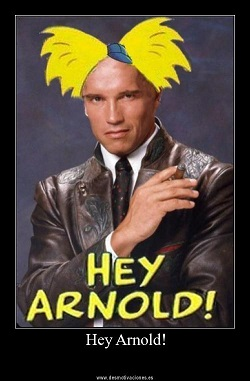
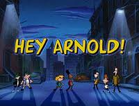
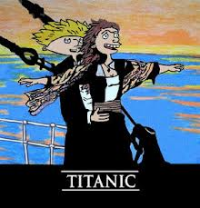

Oye Arnold
 De: La Frikipedia, la enciclopedia extremadamente seria.
De: La Frikipedia, la enciclopedia extremadamente seria.
 Serie americana de los 90's
«¡Muévete cabeza de balón!»
~ Helga cuando le demuestra su afecto a Arnold.
«Me estas terminando ¿verdad?»
~ Arnold cuando Lila le daba el tipico rollo del "te quiero como amigo".
«Bien, bien... ya no puedo ocultarlo, viste a través de mi frio y áspero exterior hasta mi cursi y sentimental interior... Puedo ser ruda al principio pero en el fondo soy una buena persona y no te odio, puede que hasta me agrades... no, es mas yo... yo te amo»
~ Helga acerca de lo tsundere que es. (Sí tsundere)
«Haaa, miren quien llego, es Helga Pataki y su grande y asquerosa ceja peluda, ¡que asco eres horrible!... No te sientes junto a mi porque se me quita el hambre.»
~ Harold acerca de lo bella que es Helga.
«ahhh, ahhhh...»
~ Brayni poniendose en bandeja a Helga.
 Caminado solos… en la calle...de noche... esperando ser viola...
«No lo entiendo, acabas de decir que me amas »
~ Arnold haciendose el desentendido sobre los sentimientos de Helga.
Argumento
Oye Arnold es una serie de Gringolandia, trata de un niño que tiene la cabeza con forma de balón y de la vida que lleva en su barrio. Vive con sus abuelos (que son bastante raros) y que alquilan a familias tan disfuncionales como la suya. Se lleva muy bien con todos sus compañeros de clase y es acosado por una niña llamada Helga, la cual está locamente enamorada de él (y lo de locamente es literal, la mina junta los chicles masticados de Arnold, le hace esculturas con basura y otras cosas por el estilo).
Su último capítulo fue en el 2004 y después se canceló porque su primera película no sacó billete , así que Nickelodeon le dijo a Craig que quería que le hicieran más temporadas, le limpiara el baño a los dueños y les hiciera la cena, les lavara la ropa, y solo Dios sabe qué favores sexuales... y que no trabajara con Cartoon Network y después pensarían si es que querían o no hacer la segunda película que tanto deseaba Craig.
Personajes
- Arnold Es un niño de 9 años que vive con sus abuelos que lo mandan a vivir en el techo y que alquilan toda su casa a una bola de locos y ve tú a saber en qué gastan el dinero ya que a pesar de que son como 30 inquilinos no les alcanza más que para la comida. El no sabe que hay una chica la cual está perdidamente enamorada de él: Helga Pataki. Él ha recibido dos flechazos: uno con Ruth y Lila. Sus padres lo abandonaron por irse a la selva a conocer a la tribu marihuanera de ojos verdes para jugar jan ken po con ellos.
- Helga .- Es la chica que está enamorada de Arnold, su hermana Olga siempre llama la atención y a ella la tratan como basura por eso. Se enamora de Arnold (pues este le dice que su moño rosa es bonito y la protege de la lluvia aunque ya estaba toda embarrada y además de darle sus galletas cuando el gordo Harold se las traga). Desde entonces, para retribuirle el gesto tan lindo que le hizo y demostrarle su profundo Amor decide humillarlo durante muchos años. Tiene altares para Arnold y le escribe poemas, recolecta su goma de mascar, mocos , basura , heces y demás, pues esa es su manera de demostrar su amor.
- Gerald.- Es amigo de Arnold, siempre lo acompaña, tiene un hermano que lo caga pero se llevan bien. Quiere con la amiga de Helga: PHEOBE BOFFET, (creo que se escribe así). El es el que sospecha en ocasiones del acoso de Helga, que diga de su profundo amor.
- Harold.- Es un gordo que siempre está jodiendo con sus idioteces, jode a Helga y recibe su tortazo por jodido. Se casa con una ardilla en un sueño, y tiene un hijo huevo con Ronda, pero la firme es Patty.
- La Gran Patty.-Es la golpeadora personal de Helga.
- Ruth .- La culisuelta de la que se enamora Arnold, lo ve como el doméstico y se va con el mozo.
- Lila .- Todo el tiempo está con cara de yo no fui y eso le gusta a Arnold, pero a ella le da a su primo, una versión deformada y sosa de Arnold que se enamora de Helga.
- Eugene .- Es el típico tonto de cada serie al cual le pasan cosas malas y está siempre herido y luego de cada tropiezo dice: ¡Estoy bien!
- Brainy .- Es un pervertido que siempre está acosando a Helga ya que es masoquista y le gusta que le den combazos en la cara. Tiene una dotación diaria de lentes.
Después del termino
Después del término, miles de fans mandaron cartas a Nickelodeon amenazando de muerte a sus familias por no darle el final a la serie, cagándola más ya que Nick se puso la actitud de " ¡¡Y a mi que me importa malditos frikis!!".
Pero los fans no se dieron por vencidos y ahora se unieron para dar un golpe de estado a EEUU y así hacer una ley para que salga el final y 20 temporadas más.
The jungle movie
 Como los fans alucinan el final
Es el final de la serie que nunca se llevó a cabo, ya que los mocosos gringos no fueron al cine y no se llenaron los bolsillos de plata de los dueños.
En síntesis, Arnold y todos los de su clase se van a Centroamérica (San Lorenzo), ahí encuentra a sus padres los cuales siguen jugando a ser Tarzan con Chita con la tribu marihuanera mientras un cazarecompensas pedofilo trata de violarlos.
Sabías que...
- Helga siempre recoge los chicles,mocos, basura y heces de Arnold desde que tenía 4 años
- Enzo Fortuny también es conocido por Oye Arnold.
- Si Enzo Fortuny, si pinche otaku latino ( si es que hay alguno leyendo esto)
- Nadie se acuerda quien doblo los 80 capítulos primeros.
- Desde niños nos lavan el cerebro con series como estas para volvernos unos enfermos acosadores y drogadictos.
Autor(es):
- Fordus
- Harry El del Pote
- Gñapero Solitario
- Salazar Slytherin
- Chise
- Southernjane
- X900
Frikipedia 2005-2016, Licencia
GFDL 1.2 - Extraído por FrikiLeaks